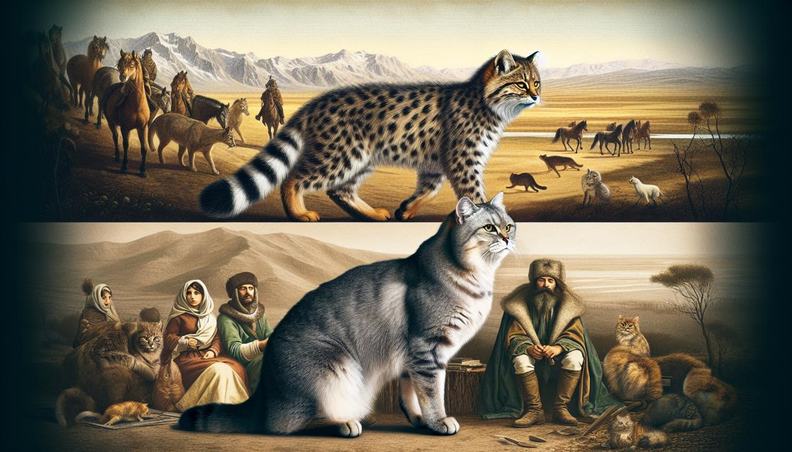
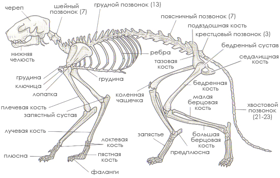
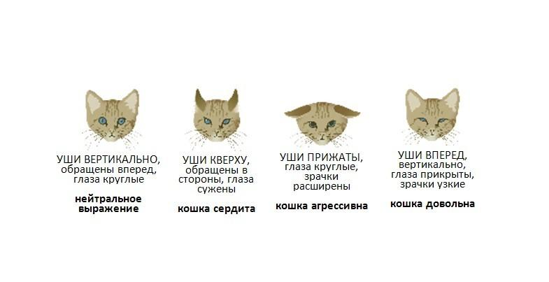
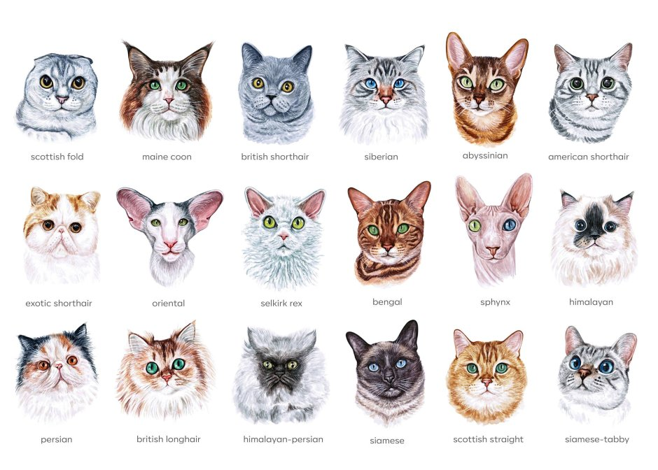

1.История и эволюция. История одомашнивания котов насчитывает тысячи лет. Считается, что предки современных домашних котов произошли от диких африканских кошек, которые начали приближаться к человеческим поселениям в поисках пищи – грызунов, уничтожавших запасы зерна. Древние египтяне почитали котов как священных животных, ассоциируя их с богиней Бастет, символом плодородия и домашнего очага. Со временем коты распространились по всему миру, адаптируясь к различным климатическим условиям и образу жизни людей.

2.Физиологические особенности. Коты обладают рядом уникальных физиологических особенностей. Их гибкое тело, острые когти и зубы делают их превосходными охотниками. У них отличное ночное зрение, благодаря чему они прекрасно ориентируются в темноте. Усы (вибриссы) помогают котам ощущать пространство и определять размеры предметов. Кроме того, у котов очень развит слух, позволяющий им слышать ультразвуковые частоты, недоступные человеческому уху. Их язык, покрытый мелкими шипами, помогает им ухаживать за шерстью и соскребать мясо с костей.

3.Поведение и характер. Поведение котов часто кажется загадочным и непредсказуемым. Они могут быть ласковыми и игривыми, а могут быть независимыми и отстраненными. Коты – территориальные животные, которые метят свою территорию с помощью запаха. Они общаются друг с другом и с людьми с помощью различных звуков, поз и движений. Например, мурлыканье часто выражает удовольствие, но может также быть способом успокоить себя в стрессовой ситуации. Игры для котов – это не только развлечение, но и способ отточить охотничьи навыки.

4.Уход и содержание. Уход за котом не требует особых усилий, но требует ответственности. Котам необходимо обеспечить сбалансированное питание, чистую воду, лоток для туалета и регулярный ветеринарный осмотр. Важно также предоставить коту возможность точить когти, чтобы избежать повреждения мебели. Игры и общение с хозяином необходимы для поддержания физического и психического здоровья кота. Регулярная чистка шерсти помогает предотвратить образование колтунов и улучшает состояние кожи.
5.Разнообразие пород. Существует огромное разнообразие пород котов, каждая из которых обладает своими уникальными характеристиками. От длинношерстных персидских котов до бесшерстных сфинксов, от игривых сиамских котов до спокойных британских короткошерстных – каждый может найти кота, который идеально подойдет его образу жизни и предпочтениям. При выборе породы важно учитывать особенности характера, потребности в уходе и возможные проблемы со здоровьем.

6.Коты и человек: взаимовыгодное сотрудничество. Взаимоотношения между котами и людьми – это история, полная любви, доверия и взаимопомощи. Коты дарят нам свою ласку, тепло и хорошее настроение, а мы, в свою очередь, обеспечиваем им заботу, защиту и комфорт. Коты могут быть отличными компаньонами для людей всех возрастов, помогая справиться со стрессом и одиночеством. Они – настоящие члены наших семей, которые делают нашу жизнь ярче и интереснее.